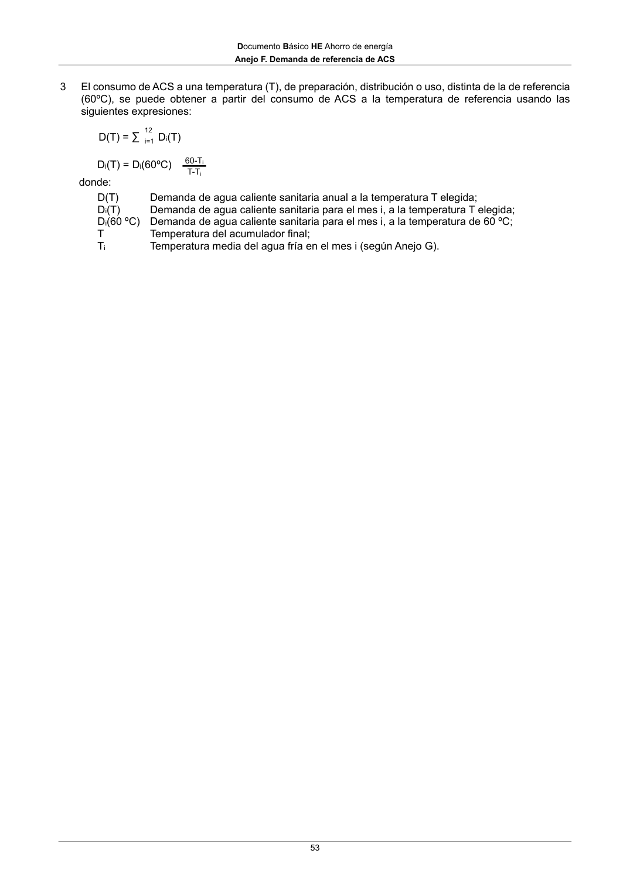

DB-HE · Anejo F. Demanda de referencia de ACS · versión 2022-06-14
SHA256: 7f890bd495552e979f83f72c5f5c7b642e745911a8e343a7b5b73023ce0e1f05 · página física 53 de 56 · métodos de encabezado
solo si están cotejados.
Formatos: Markdown · JSON de bloques · PDF p. 53 · imagen PNG
Documento Básico HE Ahorro de energía Anejo F. Demanda de referencia de ACS 53 3 El consumo de ACS a una temperatura (T), de preparación, distribución o uso, distinta de la de referencia (60ºC), se puede obtener a partir del consumo de ACS a la temperatura de referencia usando las siguientes expresiones: D(T) = ∑ 12 Di(T) i=1 Di(T) = Di(60ºC) 60-Ti T-Ti donde: D(T) Demanda de agua caliente sanitaria anual a la temperatura T elegida; Di(T) Demanda de agua caliente sanitaria para el mes i, a la temperatura T elegida; Di(60 ºC) Demanda de agua caliente sanitaria para el mes i, a la temperatura de 60 ºC; T Temperatura del acumulador final; Ti Temperatura media del agua fría en el mes i (según Anejo G).
